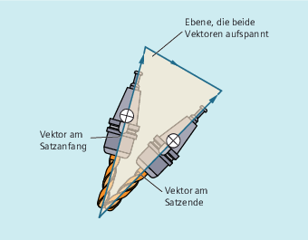

Bei ORIMKS ist die ausgeführte Werkzeugbewegung von der Maschinenkinematik abhängig. Bei Orientierungsänderung mit raumfester Werkzeugspitze wird zwischen den Rundachspositionen linear interpoliert.
Bei ORIWKS ist die Werkzeugbewegung von der Maschinenkinematik unabhängig. Bei Orientierungsänderung mit raumfester Werkzeugspitze bewegt sich das Werkzeug in der vom Anfangs- und Endvektor aufgespannten Ebene.
| Hinweis |
ORIWKSOrientierungsbewegungen im Bereich der singulären Stellung der Fünf-Achs-Maschine erfordern große Bewegungen der Maschinenachsen. (Beispielsweise sind bei einem Drehschwenkkopf mit C als Drehachse und A als Schwenkachse alle Stellungen mit A=0 singulär.) |
Um die Maschinenachsen nicht zu überlasten, senkt die Geschwindigkeitsführung die Bahngeschwindigkeit in der Nähe der singulären Stellen stark ab.
Mit den folgenden Maschinendaten kann die Transformation so parametriert werden, dass Orientierungsbewegungen in der Nähe des Pols durch den Pol gelegt werden und eine zügige Bearbeitung möglich ist:
$MC_TRAFO5_NON_POLE_LIMIT
$MC_TRAFO5_POLE_LIMIT
Singuläre Stellen werden nur mit dem Maschinendatum $MC_TRAFO5_POLE_LIMIT behandelt.
Weitere Informationen: Funktionshandbuch Transformationen